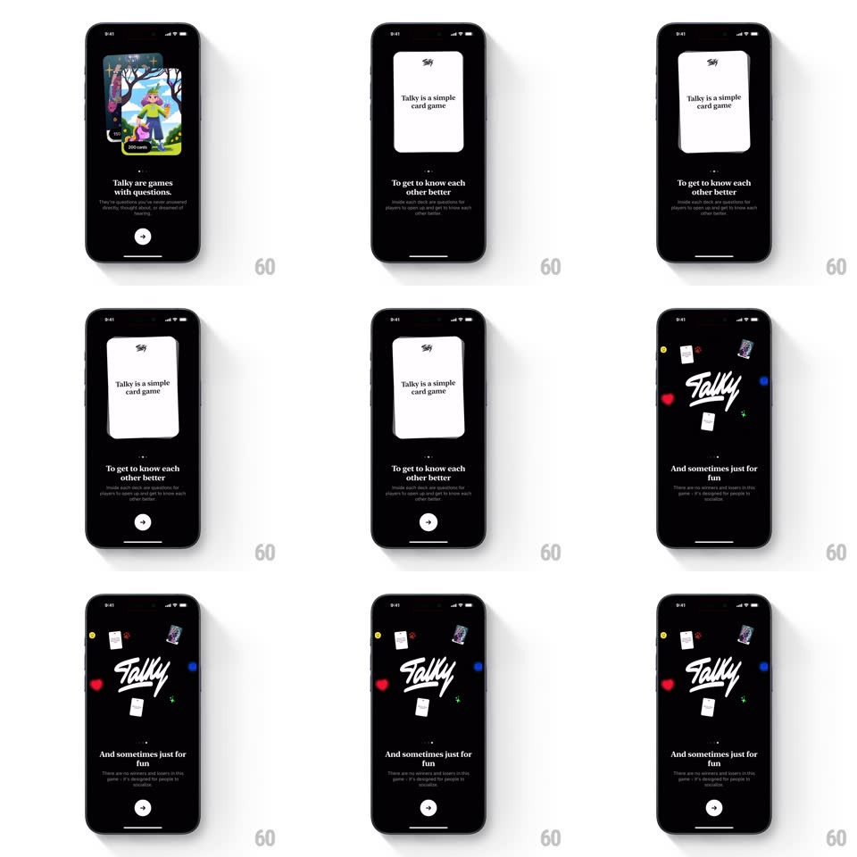

Media
Frame-by-frame

Rebuild this interaction 1:1: Talky's onboarding carousel - over black, pages spring between a card-pack illustration ("Talky are games with questions"), a tilting white card ("Talky is a simple card game", "To get to know each other better"), and the brushstroke Talky logo ringed by floating mini cards ("And sometimes just for fun").

Rebuild this interaction 1:1: Talky's onboarding carousel - over black, pages spring between a card-pack illustration ("Talky are games with questions"), a tilting white card ("Talky is a simple card game", "To get to know each other better"), and the brushstroke Talky logo ringed by floating mini cards ("And sometimes just for fun").
## Integration
Integration: stack-agnostic spec - springs given as stiffness/damping, timed motions as duration + curve; map every value to your framework and animation library of choice.
## Scene
Black throughout: page 1 shows a colorful card pack (wizard scene, "150"/"200 cards" badges) above serif-ish white copy and a round play button; page 2 a plain white card with the Talky mark; page 3 the white brushstroke logo surrounded by tiny cards and colored dots floating.
## Motion spec
Pattern: springy paged carousel with floating decoration.
- Swipe/advance: the outgoing page slides left and scales 0.92 (280ms) while the incoming page springs in from the right (spring ~300/24); page dot fill slides to match.
- Per page, the headline fades up first (250ms), body copy staggers in behind it (120ms), the play button pops last (scale 0.7 -> 1, spring ~420/20).
- The page-2 white card tilts slowly (+-4deg, 3s sway) like it's being held.
- Page 3: the mini cards and dots orbit the logo lazily (translate +-10px, varied 2.5-4s loops); the logo itself breathes (scale 1 <-> 1.02).
## Calibration
- One play button, always same spot bottom-center - it is the consistent exit.
- Decorative float loops are ambient and offset in phase so nothing syncs up.
## Reduced motion
Pages crossfade; decorations static.
## Don't miss
- The copy tone shifts across pages (games -> connection -> fun) while the visual language stays black + white + card art.
- The card pack badges ("150"/"200 cards") are part of the artwork, not UI.